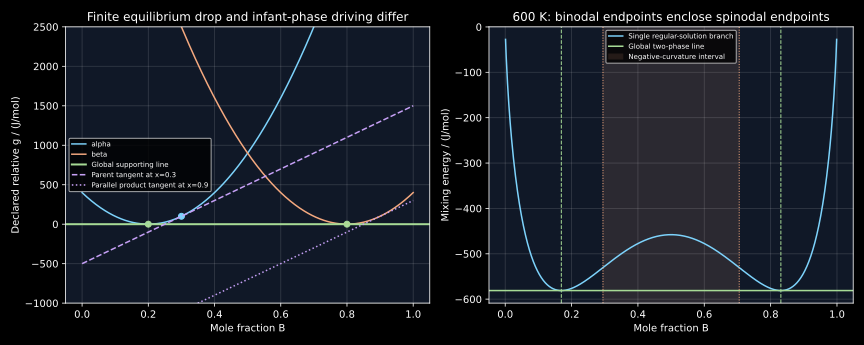

12. Global tangents, transformation driving forces and the phase rule
Equal chemical potentials identify a stationary phase assemblage. To establish equilibrium, its supporting line must also lie below every admissible phase at every composition. This global condition distinguishes a minimum from a plausible tangent construction that misses another phase. Once the minimum is known, three different questions remain: the finite energy released on reaching it, the differential incentive to form an infinitesimal product, and the freedom to vary its intensive state. They require different calculations.
The entire local transcripts of lessons 21–24 were read sequentially. They connect common tangents to binary and ternary diagrams, distinguish transformation and nucleation driving forces, introduce the equal-composition $T_0$ locus and derive the Gibbs phase rule. This chapter supplies a global lower-bound proof, an explicit counterexample to chemical-potential equality as a sufficient test, endpoint and line-compound qualifications, and a consistent intensive-variable count. All plotted energies are declared teaching functions, not assessed alloy data. Neither commercial software nor an experimental phase diagram is reproduced.
12.1 Turn phase selection into a constrained minimum L 21 · 00:51
Fix temperature, pressure and total component amounts in a macroscopic binary system. Let $z$ be its overall mole fraction of $B$. A candidate assemblage contains phase fractions $f_j\ge0$, compositions $x_j$ and phase labels $\phi_j$. Use one common molar amount basis and neglect interfacial, elastic and other nonbulk costs. Conservation requires $\sum_j f_j=1$ and $\sum_j f_jx_j=z$. Its molar Gibbs energy is $\sum_j f_jg^{\phi_j}(x_j)$. Equilibrium minimizes this sum over every allowed assemblage.
The overall composition is not generally the composition of either coexisting phase. A single phase at $z$ is only one admissible candidate. Comparing all curves at that same horizontal position misses mixtures whose phase compositions lie elsewhere. Graphically, the equilibrium energy is the lower convex envelope of the admissible curves and isolated phase points.
A supporting line gives a rigorous global certificate. Suppose $\ell(x)=a+bx$ satisfies $g^\phi(x)\ge\ell(x)$ for every allowed phase and composition. For every conserved assemblage,
If an assemblage uses only contact points where equality holds, it attains this bound and is globally minimizing. This proof is independent of how the contacts were found. Under the usual finite-branch, continuous-energy, compact-domain assumptions, the convex envelope has such supporting lines at interior compositions, so the construction is more than a graphical guess. Endpoints may require one-sided limits instead of a finite tangent slope.
At a smooth interior contact, $g'(x)=b$ and $g(x)-xg'(x)=a$. Chapter 11's partial molar identities therefore give $\mu_A=a$ and $\mu_B=a+b$. Two contacts on the same supporting line share both chemical potentials. This derives the common-tangent condition from conservation and minimization. Conversely, matching slopes and intercepts alone proves only tangency; the global inequalities remain to be checked against all other curves and all other portions of the same nonconvex branch.
12.2 An exactly certified two-phase example L 21 · 12:07
At a selected temperature, declare relative molar phase energies on $0\le x\le1$:
with $A=10000$ J/mol, $a_0=0.2$, $b_0=0.8$ and a prescribed offset $\delta$. A common thermal background can be added to both branches without changing any composition comparison; the geometric model does not purport to give absolute heat capacities or entropies. Seek a common tangent of slope $m$. The derivative conditions give $x_\alpha=a_0+m/(2A)$ and $x_\beta=b_0+m/(2A)$. Equality of tangent intercepts then gives $m=\delta/(b_0-a_0)$.
Set $c=g_\alpha(x_\alpha)-mx_\alpha$. Direct expansion proves
Both residuals are nonnegative for the entire domain. This is an analytic certificate, not an inference from sampling a finite grid. Provided both contacts remain in the domain, the two-phase mixture attains the global bound for overall compositions between them. Its amount fraction is $f_\beta=(z-x_\alpha)/(x_\beta-x_\alpha)$, with $f_\alpha=1-f_\beta$. A negative fraction signals that the selected contacts cannot represent that overall composition.
For $\delta=0$, contacts are 0.2 and 0.8, the common line is zero, and $z=0.3$ gives $f_\beta=1/6$. The initial homogeneous $\alpha$ energy is 100 J/mol, while the final mixture's energy is zero. For $\delta=500$ J/mol, the slope is 833.333333333 J/mol and contacts shift to 0.241666667 and 0.841666667. The same exact residual proof certifies the shifted result.
Now add a third phase $g_\gamma(x)=A(x-0.5)^2-200$ J/mol to the zero-offset example. The old $\alpha$ and $\beta$ contacts still share chemical potentials zero, but their supporting line now lies above $g_\gamma(0.5)=-200$. At overall composition 0.5 the pure $\gamma$ state is lower. The constant line−200 lies below all three curves and touches $\gamma$, certifying the new minimum there. This explicitly disproves the unrestricted statement that chemical-potential equality alone is equivalent to global Gibbs-energy minimization.
12.3 Keep reference shifts common across all competing phases L 22 · 01:07
A phase model often has pure-endmember terms, an ideal configurational term and excess, magnetic or other contributions. Their separation is bookkeeping within one consistent potential. Comparing only the excess terms, or independently subtracting each phase's own endmember line, can remove the very lattice-stability differences needed for phase selection.
A harmless common elemental transformation adds $h(x)=(1-x)c_A+xc_B$ to every phase curve at the specified temperature and pressure. It adds $h(z)$ to every composition-conserving assemblage. The common-tangent slope shifts by $c_B-c_A$, its intercept by $c_A$, and all residuals $g^\phi-\ell$ are unchanged. Equilibrium phase identities, compositions and fractions therefore remain unchanged. A nonlinear composition-dependent addition would not generally have this property: its weighted phase average need not equal its value at the overall composition.
Likewise, the lower curve at a given composition need not be the only relevant branch. A curve with the same crystallographic structure can have a miscibility gap and support two phases of different composition. Conversely, crystallographic structure alone need not specify every internal state: ordering, magnetism or other internal variables may produce additional branches or require minimization within a phase model. “One curve per structure” is a useful introductory picture, not a universal classification theorem.
12.4 Local curvature, metastability and global separation L 22 · 14:29
Consider the symmetric regular mixing branch $g(x)=RT[x\ln x+(1-x)\ln(1-x)]+\Omega x(1-x)$ with constant positive $\Omega$. An affine common reference does not change its curvature. The local stability condition is $g''=RT/[x(1-x)]-2\Omega>0$. Equality gives the spinodal compositions
The smallest curvature occurs at $x=1/2$ because $x(1-x)$ is largest there. Above $T_c$ the branch is strictly convex; the two spinodal points merge at the mean-field critical point. Below it, the common tangent between the two global minima is horizontal by symmetry. The binodal endpoints $x_b$ and $1-x_b$ solve
There is also the stationary root $1/2$; a root finder must not mistake that central maximum for a binodal endpoint. The curvature has two zeros. On the left of the first, $g'$ increases from−infinity to a positive value, giving one minimum; symmetry supplies the other. Between them the central stationary point is a maximum. This sign structure proves that the two equal minima define a global lower horizontal line for this declared branch.
For $\Omega=12000$ J/mol and 600 K, $T_c=721.634130256$ K, binodals are 0.169140902 and 0.830859098, and spinodals are 0.294723517 and 0.705276483. At the intermediate composition 0.231932209, curvature is positive 4004.306176615 J/mol, yet the homogeneous energy lies 16.879041231 J/mol above the two-phase line. This is metastability within the bulk composition model: infinitesimal nearby composition variations do not lower the energy, but a sufficiently large separation does. Inside the spinodal, arbitrarily small symmetric composition variations already lower bulk energy.
These are thermodynamic statements. The finite-length interface, gradient penalty, coherency strain and material transport determine how a spatial perturbation develops. A binodal or negative curvature alone is not a growth-rate calculation. Nor does a positive curvature establish global stability against another phase or distant composition.
12.5 A line compound is a constrained point, not a missing derivative to invent L 22 · 17:12
Represent an ideal line compound by one composition $x_c$ and one molar energy $g_c$, on the same amount basis as the solution curves. A supporting line need only satisfy $\ell(x_c)\le g_c$ at that point. There is no off-stoichiometric branch from which to calculate $dg_c/dx$ unless the model explicitly supplies defects or a finite homogeneity range.
Use the zero-offset parabolas and add $x_c=0.5$, $g_c=-100$ J/mol of atoms. A tangent from the left solution to the compound satisfies $g_\alpha(x_a)+g_\alpha'(x_a)(x_c-x_a)=g_c$. Setting $q=x_a-a_0$ reduces this to $A[2q(x_c-a_0)-q^2]=g_c$. The left contact is $x_a=x_c-\sqrt{(x_c-a_0)^2-g_c/A}=0.183772234$. By symmetry, the right solution contact is 0.816227766.
For a line through the compound with slope $m$, minimizing the solution-minus-line residual over each complete parabola gives $100+0.3m-m^2/(4A)$ for $\alpha$ and $100-0.3m-m^2/(4A)$ for $\beta$, in the consistent molar units. Requiring both nonnegative gives the slope interval below. The bounding residual minima occur at interior compositions, so they also establish the necessary bounds on the declared domain. For a pure sample of the compound, any supporting-line slope between−324.555320337 and+324.555320337 J/mol lies below both solution curves while passing through the compound point. Thus $g_c=(1-x_c)\mu_A+x_c\mu_B$ fixes only a weighted combination of elemental chemical potentials. Neighboring phases or specified reservoirs can fix the remaining freedom. For an $AB$ formula, the same energy is−200 J per mole of formula units, and the stoichiometric relation is $\mu_A+\mu_B=-200$ J/mol formula. Mixing per-mole-atoms and per-mole-formula numbers would introduce a factor of two.
A real narrow-homogeneity compound can possess defects and configurational entropy, while even a perfectly chemically ordered line-compound model generally has vibrational, electronic or magnetic entropy. Fixed composition is not evidence of zero total entropy, and does not by itself prove a universally large negative formation enthalpy. It is a model constraint requiring its own thermodynamic formation data.
12.6 Finite energy release and differential affinity are different quantities L 23 · 00:55
At fixed bath temperature and pressure, with a closed system and no useful-work exchange, a finite transformation from initial state to global equilibrium releases $G_i-G_{\rm eq}\ge0$. This is an energy for the stated total amount, or a molar energy after an explicitly chosen normalization. It is not a mechanical force. It also does not determine the time needed to transform.
Choose an admissible progress coordinate $\eta$ while enforcing the material balance. Define affinity $\mathcal A=-dG/d\eta$. If $\eta$ is moles of product, the affinity has units J/mol of product. If $\eta$ is transformed volume, its conjugate quantity has units J/m³. An increment along the chosen path satisfies $-dG=\mathcal A\,d\eta$. Integration gives the finite release, but the affinity need not remain equal to its initial value.
The entropy interpretation also needs the environmental assumptions. Under the fixed single-bath, fixed-pressure, closed-system conditions just stated, $dS_{\rm total}=-dG/T$ for no useful work, so $dS_{\rm total}=\mathcal A\,d\eta/T$. It is composite entropy generation, not necessarily the system's entropy increase. In a general process with different reservoirs, work or changing temperature, entropy production is not determined by one universal endpoint entropy function. No principle of maximizing the instantaneous entropy-production rate is derived here.
In the zero-offset parabolic example, start with one mole of homogeneous $\alpha$ at $z=0.3$. A constrained path can retain product composition 0.8 while its amount fraction $\eta$ increases from zero to 1/6. The residual parent composition is $x_p=(0.3-0.8\eta)/(1-\eta)$. Its total energy per initial mole is
Here $G(\eta)$ denotes energy per initial mole: if the initial amount is $n_0$, the physical total energy is $n_0G$ and the product amount is $n_q=n_0\eta$. Consequently $-\partial(n_0G)/\partial n_q=-dG/d\eta$, giving the stated affinity per mole of product. The initial affinity is 1100 J/mol product and tends to zero at the final point. Integrating it over the path gives 100 J/mol initial material, exactly the finite drop. At a stipulated fixed bath temperature 600 K this corresponds to total entropy generation $100/600=1/6$ J/(mol initial K), if the other no-work assumptions hold. A zero derivative at some arbitrary stationary point would not alone prove global equilibrium; admissible directions and the global support test still matter.
12.7 Infinitesimal product formation uses the parent tangent L 23 · 18:48
Let a parent phase start at composition $z$. Form a small mole fraction $\eta$ of product with composition $y$, keeping total composition fixed. The parent composition must become $x_p(\eta)=(z-\eta y)/(1-\eta)$. The total molar energy is $(1-\eta)g_p[x_p(\eta)]+\eta g_q(y)$. Differentiating at zero gives
Therefore the bulk incentive per mole of infinitesimal product is $D_q(y)=\ell_p(y)-g_q(y)$. Maximizing it over allowed product compositions selects the strongest initial thermodynamic incentive. At an interior optimum, $g_q'(y)=g_p'(z)$: the product tangent is parallel to the parent tangent. If the optimum lies at a composition endpoint or constrained line compound, a one-sided or point test replaces that derivative equality.
For parent $\alpha$ at $z=0.3$, its tangent is $\ell_p(y)=2000y-500$ J/mol. The best initial $\beta$ composition is 0.9, giving $D_\beta=1200$ J/mol product. Direct evaluation with $\eta=10^{-7}$ gives a total-energy difference divided by $\eta$ of−1199.999640 J/mol product, approaching the analytic derivative−1200. The eventual equilibrium product composition is 0.8, and the finite total release is 100 J/mol initial. All three numbers are correct; they answer different questions and use different amount normalizations.
The 1200 J/mol bulk value is not a complete nucleation barrier calculation. Creating an interface, accommodating coherency strain and supplying atoms can oppose or delay formation. A positive bulk incentive cannot guarantee immediate nucleation or identify an observed transformation mechanism. The phase's allowed composition range and internal constraints must also be respected.
12.8 Check the actual driving-force variable and constrained phase set
The retrieved official TC-Python 2026 b driving-force documentation distinguishes a J/mol result, calculated as $RT\,\mathrm{DGM}(\mathrm{phase})$, from its dimensionless normalized result DGM. Its matrix and precipitate selections identify the comparison being requested. The phase-status documentation also distinguishes a dormant phase, for which a formation driving force is evaluated, from a suspended phase ignored in the calculation. Those passages were read directly.
Consequently, a reported driving force must retain its phase status, reference assemblage, database, conditions and molar basis. A phase excluded while calculating a constrained parent is a different problem from global equilibrium with that phase admitted. A dimensionless phase quantity should not be equated with the entire finite energy released by an alloy of arbitrary amount. No TC-Python installation, licensed calculation or database was run here; the independent program below evaluates only the explicit teaching functions.
12.9 The $T_0$ locus constrains composition rather than permitting partitioning L 23 · 22:57
A $T_0$ comparison asks where two homogeneous phases have equal molar energies at the same composition: $g_\alpha(x,T)=g_\beta(x,T)$. An equilibrium common tangent instead usually touches phases at different compositions with equal component chemical potentials. Curve intersection is not common tangency.
For the parabolas, the equal-composition root is $x_0=0.5+\delta/[2A(b_0-a_0)]$. With zero offset it is 0.5; both homogeneous energies there are 900 J/mol, while the equilibrium separated energy is zero. Their derivatives are+6000 and−6000 J/mol, so their chemical-potential pairs are not equal. With $\delta=500$, $x_0=0.541666667$, lying between the common-tangent contacts 0.241666667 and 0.841666667.
To illustrate a temperature locus, let $\delta(T)=10(1000-T)$ J/mol over a restricted neighborhood of 1000 K. Substituting gives $T_0(x)=1000-1200(x-0.5)$ K. It marks zero bulk energy difference for a partitionless homogeneous comparison in this declared model. Strain, defects, interfaces and kinetic barriers can shift an actual transformation condition; equality alone predicts neither martensite start nor a measured solidification rate.
12.10 Count intensive freedoms without counting phase amounts L 24 · 00:41
First consider $C$ independent nonreacting components in $P$ solution phases, with no extra field or fixed-stoichiometry constraints. Each phase has $C-1$ independent composition coordinates. Common temperature and pressure add two coordinates, giving $2+P(C-1)$ variables before interphase equilibrium. Equality of each of the $C$ component chemical potentials between a reference phase and the other $P-1$ phases gives $C(P-1)$ constraints. Where these equations have the expected independent rank,
The constraint count uses all component chemical potentials. In a ternary phase, a component's chemical potential generally depends on both independent composition coordinates, not only its own mole fraction. The per-phase Gibbs–Duhem relation does not permit arbitrarily discarding an interphase equality. It constrains changes of chemical potentials within a phase and is already consistent with this complete count.
For a binary two-phase equilibrium, the unconstrained count gives $F=2$, typically temperature and pressure, with both tie-line compositions dependent on them. Fixing pressure leaves one intensive freedom. Once temperature is also selected, the generic tie line is fixed. The recording's initial verbal count of pressure, temperature and one phase composition as three independent freedoms is superseded by its own final correct formula. Both component equalities, not only one, are needed to obtain the correct answer.
| Generic setting | Intensive freedoms | Meaning |
|---|---|---|
| Binary, one phase, fixed pressure | 2 | Temperature and one composition can vary locally. |
| Binary, two phases, fixed pressure | 1 | A family of tie lines parametrized by one intensive coordinate. |
| Binary, three phases, fixed pressure | 0 | Invariant temperature and three coexisting compositions. |
| Ternary, two phases, fixed temperature and pressure | 1 | A one-parameter family of tie lines remains. |
| Ternary, three phases, fixed temperature and pressure | 0 | Generic tie-triangle vertices are fixed. |
These freedoms concern phase intensive states. At fixed tie-line endpoints, changing the overall composition changes phase amounts, not the intensive equilibrium. At a binary three-phase invariant, three fractions obey normalization and one composition balance, leaving one independent fraction combination when all fractions can remain positive. An energy constraint or reaction progress can determine it. Thus $F=0$ does not mean all phase amounts are fixed by temperature, pressure and overall composition alone.
At a ternary three-phase tie triangle, normalization and two independent composition balances generally determine three fractions for an interior overall composition. The ternary two-phase case is different: its family of tie lines and the amount balance together select the compatible endpoints for a given overall composition. Intensive freedom and amount-balance freedom must not be added or subtracted interchangeably.
The simple count assumes an ordinary region with the stated rank. Reactions reduce the number of independent components; special stoichiometric constraints, missing components, critical coalescence or imposed fields require a corresponding variable-and-constraint analysis. Fixing a quantity removes a freedom only if it was independently variable. For example, a unary triple point already has $F=0$: fixing pressure to its triple-point value does not create a negative-dimensional equilibrium, while an incompatible pressure removes that three-phase state altogether.
The geometric phase-diagram examples follow the same support principle. A binary eutectic has one line touching two solid states and a liquid state, with the liquid composition between the solids. At a peritectic, the intermediate product solid's composition lies between the two reactant compositions; the liquid lies on one end of that ordering. Two separated phases can occupy the same structural branch at different compositions. For ternaries, the line becomes an affine supporting plane on the two-dimensional composition simplex; in higher-component systems, the same lower-bound proof works algebraically without requiring a drawable picture.
12.11 Research connection: a converged stationary calculation still needs a stability test
Michelsen's 1982 primary abstract on isothermal flash stability proposes stability analysis as a preliminary step to phase-split calculations and describes methods based on Gibbs' tangent-plane criterion. The published abstract was read; attempts to retrieve the university-hosted full PDF timed out, so no claim is made to have inspected or implemented the paper's complete algorithms. Its stated distinction is illustrated independently here by the third-phase counterexample: equal chemical potentials for two phases remain possible after another phase makes the assemblage unstable.
For a multicomponent candidate with common chemical potentials $\mu_i$, the corresponding residual is $g^\phi(\mathbf x)-\sum_i x_i\mu_i$. Any negative value at an admissible composition identifies a possible decrease relative to that reference tangent plane. A local root solver that only equalizes selected chemical potentials can miss such a state. The exact parabolic residual identities below provide global certificates for their declared models; finite sampling of a general assessed database would provide only a sampled check unless accompanied by further bounds. We do not infer database-wide accuracy or global stability from numerical convergence alone.

12.12 Reproducible numerical checks
The program verifies exact supporting-line identities, lever balance, the third-phase counterexample, finite versus infinitesimal release, affinity integration, a line-compound support interval and bounded binodal roots. Grid evaluations check arithmetic against exact identities; the derivations above establish why those identities hold globally. All displayed output was produced by executing this exact listing.
"""Exact declared parabolic certificates and bounded regular-solution checks."""
from math import log,sqrt,isclose
R=8.31446261815324
A,LEFT,RIGHT=10000.0,.2,.8
def ga(x):return A*(x-LEFT)**2
def gb(x,delta=0):return A*(x-RIGHT)**2+delta
def pair(delta=0):
slope=delta/(RIGHT-LEFT)
xa=LEFT+slope/(2*A);xb=RIGHT+slope/(2*A)
intercept=ga(xa)-slope*xa
return xa,xb,slope,intercept
def g_regular(x,t,omega=12000):
return R*t*(x*log(x)+(1-x)*log(1-x))+omega*x*(1-x)
def bisect(fn,a,b):
fa=fn(a);fb=fn(b);assert fa*fb<0
for _ in range(100):
c=(a+b)/2;fc=fn(c)
if fa*fc<=0:b,fb=c,fc
else:a,fa=c,fc
return (a+b)/2
def main():
for delta in (0,500):
xa,xb,m,c=pair(delta)
assert 0<xa<xb<1
for j in range(1001):
x=j/1000
# Both exact residual identities are global certificates, not mere grid claims.
assert isclose(ga(x)-(c+m*x),A*(x-xa)**2,abs_tol=1e-9)
assert isclose(gb(x,delta)-(c+m*x),A*(x-xb)**2,abs_tol=1e-9)
xt0=.5+delta/(2*A*(RIGHT-LEFT))
assert isclose(ga(xt0),gb(xt0,delta),abs_tol=1e-9)
print(f'Parabolic delta={delta}: coexistence={xa:.9f},{xb:.9f}; slope={m:.9f}; T0 composition={xt0:.9f}')
z=.3;fraction=(z-LEFT)/(RIGHT-LEFT)
assert isclose((1-fraction)*LEFT+fraction*RIGHT,z)
print(f'At overallxB0.3: beta mole fraction={fraction:.9f}; finite release={ga(z):.9f} J/mol_initial')
# Old alpha/beta equality alone misses a new competing phase.
gamma=lambda x:A*(x-.5)**2-200
assert gamma(.5)<0
print(f'Third-phase counterexample: old common line=0; competing gamma at0.5={gamma(.5):.6f} J/mol')
parent_slope=2*A*(z-LEFT)
tangent=lambda y:ga(z)+parent_slope*(y-z)
ystar=RIGHT+parent_slope/(2*A)
drive=tangent(ystar)-gb(ystar)
def infant(eta):
xp=(z-eta*ystar)/(1-eta)
return (1-eta)*ga(xp)+eta*gb(ystar)
eta=1e-7;derivative=(infant(eta)-ga(z))/eta
assert isclose(derivative,-drive,abs_tol=.001)
print(f'Infinitesimal product: xB={ystar:.9f}; parent-tangent release={drive:.9f} J/mol_product; finite_difference_derivative={derivative:.6f}')
# A separate full-progress path keeps productcomposition at its final0.8value.
d=z-LEFT;h=RIGHT-LEFT
def progress_g(eta):return A*(d-h*eta)**2/(1-eta)
def affinity(eta):return A*(2*h*(d-h*eta)/(1-eta)-(d-h*eta)**2/(1-eta)**2)
n=1000;step=fraction/n
integral=step*(affinity(0)+affinity(fraction)+sum((4 if j%2 else 2)*affinity(j*step) for j in range(1,n)))/3
assert isclose(integral,progress_g(0)-progress_g(fraction),abs_tol=1e-9)
print(f'Full constrained path: initial affinity={affinity(0):.9f} J/mol_product; integral={integral:.9f} J/mol_initial; final affinity={affinity(fraction):.9f}')
gc,xc=-100.0,.5
# Symmetric tangent from alpha to the line compound.
xa=xc-sqrt((xc-LEFT)**2-gc/A)
ml=2*A*(xa-LEFT)
assert isclose(ga(xa)+ml*(xc-xa),gc,abs_tol=1e-9)
print(f'Line compound: x_alpha={xa:.9f}; x_beta={1-xa:.9f}; admissible purecompound support slopes=[{ml:.9f},{-ml:.9f}]')
t,omega=600.0,12000.0
tc=omega/(2*R)
spin=(1-sqrt(1-2*R*t/omega))/2
binodal=bisect(lambda x:R*t*log(x/(1-x))+omega*(1-2*x),1e-12,.499999)
assert binodal<spin<.5
print(f'Regular model: criticalT={tc:.9f} K; binodal={binodal:.9f},{1-binodal:.9f}; spinodal={spin:.9f},{1-spin:.9f}')
# Check a convex local branch that is still above the global two-phase line.
test=.5*(binodal+spin)
curvature=R*t/(test*(1-test))-2*omega
gap=g_regular(test,t)-g_regular(binodal,t)
assert curvature>0 and gap>0
print(f'Metastable local test: xB={test:.9f}; curvature={curvature:.9f}; above equilibrium line={gap:.9f} J/mol')
print('Generic intensive counts: binary2phase F=2, fixedp F=1; binary3phase fixedp F=0; ternary2phase fixedTp F=1')
print('All exact supporting-line, conservation, affinity and bounded root checks passed.')
if __name__=='__main__':main()
Parabolic delta=0: coexistence=0.200000000,0.800000000; slope=0.000000000; T0 composition=0.500000000 Parabolic delta=500: coexistence=0.241666667,0.841666667; slope=833.333333333; T0 composition=0.541666667 At overallxB0.3: beta mole fraction=0.166666667; finite release=100.000000000 J/mol_initial Third-phase counterexample: old common line=0; competing gamma at0.5=-200.000000 J/mol Infinitesimal product: xB=0.900000000; parent-tangent release=1200.000000000 J/mol_product; finite_difference_derivative=-1199.999640 Full constrained path: initial affinity=1100.000000000 J/mol_product; integral=100.000000000 J/mol_initial; final affinity=0.000000000 Line compound: x_alpha=0.183772234; x_beta=0.816227766; admissible purecompound support slopes=[-324.555320337,324.555320337] Regular model: criticalT=721.634130256 K; binodal=0.169140902,0.830859098; spinodal=0.294723517,0.705276483 Metastable local test: xB=0.231932209; curvature=4004.306176615; above equilibrium line=16.879041231 J/mol Generic intensive counts: binary2phase F=2, fixedp F=1; binary3phase fixedp F=0; ternary2phase fixedTp F=1 All exact supporting-line, conservation, affinity and bounded root checks passed.
12.13 Exercises with complete solutions
1. Prove that a common supporting line certifies the entire assemblage.
For every phase point, $g_j\ge a+bx_j$. Multiply by its nonnegative fraction and sum: $\sum f_jg_j\ge a\sum f_j+b\sum f_jx_j=a+bz$. If all used points are contacts, equality holds. Hence no admissible assemblage can lie below the candidate. The proof fails if even one allowed phase has a point below the line. Smooth tangency ensures equal derivatives at contacts; it does not supply the missing inequalities away from those contacts.
2. Recover the shifted parabola contacts and fractions.
Derivative equality gives $m=2A(x_\alpha-0.2)=2A(x_\beta-0.8)$. Equating intercepts gives $m=\delta/0.6$. For $\delta=500$, $m=833.333333333$ J/mol and the contacts are 0.241666667 and 0.841666667. At $z=0.3$, the $\beta$ fraction is $(0.3-0.241666667)/0.6=0.097222222$. Substitution into the composition balance recovers 0.3. Both parabolic residuals equal $A$ times the squared distance from their contacts, establishing global support for these two branches.
3. Preserve or destroy equilibrium by changing the energy reference.
Adding $c_A+(c_B-c_A)x$ to every branch changes each assemblage's energy by $c_A+(c_B-c_A)z$. All candidates at the same overall composition receive the same addition, and the common line shifts with them. By contrast, subtracting 200 J/mol from only the new $\gamma$ branch can put its minimum below an old supporting line. In the counterexample, $\alpha$ and $\beta$ retain equal chemical potentials zero while pure $\gamma$ at 0.5 has energy−200. The old candidate is stationary among its two phases but no longer globally minimizing.
4. Separate binodal and spinodal tests.
For the symmetric regular model, solve $g''=0$ to obtain $x_s^\pm=[1\pm\sqrt{1-2RT/\Omega}]/2$. At 600 K they are 0.294723517 and 0.705276483. Global minima instead solve $g'=0$ away from the central root, giving 0.169140902 and 0.830859098. Between the left binodal and left spinodal, a locally convex homogeneous state can still lie above the global two-phase line. The tested midpoint 0.231932209 has positive curvature 4004.306176615 J/mol and positive energy gap 16.879041231 J/mol. A local curvature check and a global tangent check answer different stability questions.
5. Why is a line compound's elemental chemical-potential pair not unique?
The point constraint is $(1-x_c)\mu_A+x_c\mu_B=g_c$. At $x_c=0.5$ and $g_c=-100$ J/mol atoms, it fixes $\mu_A+\mu_B=-200$ but not the difference. A support line of slope $m=\mu_B-\mu_A$ has intercept $-100-m/2$. Requiring it below both solution parabolas gives the finite interval bounded by the left and right tangencies, $m\in[-324.555320337,324.555320337]$ J/mol. Contact with a specified neighboring phase selects an endpoint slope; a pure constrained compound alone does not provide an invented $dg/dx$.
6. Calculate the initial optimized product incentive and the final finite release.
The parent at 0.3 has $g_\alpha=100$ and slope 2000 J/mol, so its tangent is $2000y-500$. Product derivative equality $2A(y-0.8)=2000$ gives $y=0.9$. Its energy is 100, while the parent tangent there is 1300, giving 1200 J/mol of infinitesimal product. The final contacts are 0.2 and 0.8 with $\beta$ amount 1/6, and their mixture energy is zero. The total release is therefore 100 J per initial mole. The quantities differ in both process stage and denominator; they should not be equated.
7. Derive and integrate the constrained path affinity.
Let $d=0.1$, $h=0.6$ and $G=A(d-h\eta)^2/(1-\eta)$. Differentiation gives $\mathcal A=A[2h(d-h\eta)/(1-\eta)-(d-h\eta)^2/(1-\eta)^2]$. At zero it is $10000(0.12-0.01)=1100$ J/mol product. At $\eta=d/h=1/6$ it vanishes. The fundamental theorem gives $\int_0^{1/6}\mathcal A\,d\eta=G(0)-G(1/6)=100$ J/mol initial, independently confirmed by numerical quadrature. The initial value differs from 1200 because this path holds product composition at 0.8 rather than optimizing the infinitesimal product at 0.9.
8. Show explicitly why $T_0$ is not the coexistence tie line.
At zero offset, both homogeneous branches have energy 900 J/mol at $x=0.5$. Their slopes are+6000 and−6000 J/mol, so their tangent intercepts and component chemical potentials differ. A mixture of compositions 0.2 and 0.8 has energy zero at the same overall composition. Equal-composition equality therefore leaves 900 J/mol of possible bulk lowering through partitioning. For $\delta(T)=10(1000-T)$, solving the intersection equation yields $T_0(x)=1000-1200(x-0.5)$ K. It is a constrained homogeneous comparison, not a measured transformation-start curve.
9. Reconcile zero intensive freedom with changing phase amounts.
A binary three-phase equilibrium has $F=2-3+2=1$ before pressure is fixed. Fixing an independently variable pressure leaves $F=0$, so its temperature and phase compositions are locally fixed. Yet three phase fractions obey only two independent equations, normalization and binary overall composition, leaving one fraction combination free where all remain positive. For a ternary three-phase system at fixed temperature and pressure, the generic intensive freedom is also zero, but normalization plus two composition balances determine the three fractions for an interior tie-triangle point. The phase rule counts the intensive equilibrium manifold; mass and energy balances determine amounts under the chosen preparation conditions.
12.14 What must survive in a numerical equilibrium calculation
A calculation must preserve conservation, use compatible references, find admissible nonnegative amounts, and test the global supporting inequalities. Its driving-force output must retain the constrained state and amount normalization, while its degrees of freedom must distinguish intensive variables from phase amounts. The next chapter uses these requirements to examine how CALPHAD assembles phase models and performs constrained minimization. Numerical convergence becomes evidence about a specified mathematical problem, rather than a substitute for defining that problem.